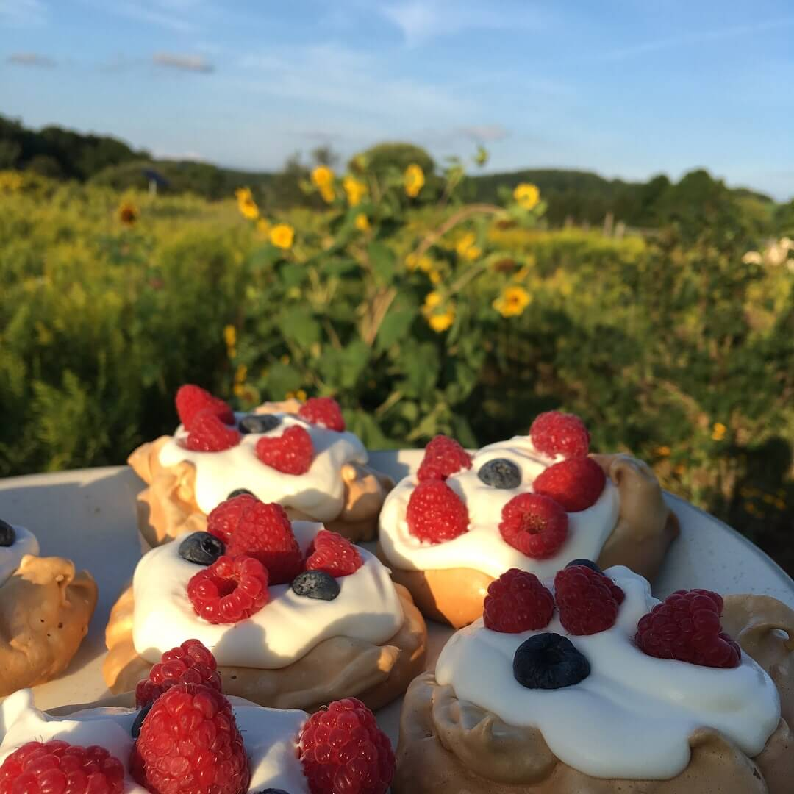
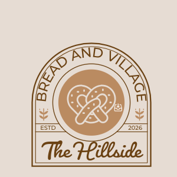
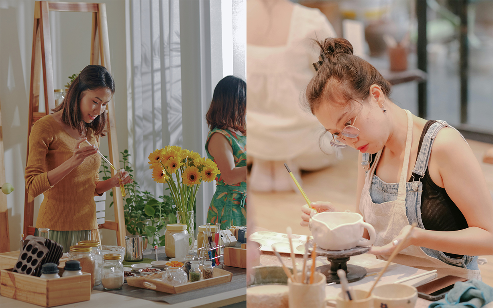
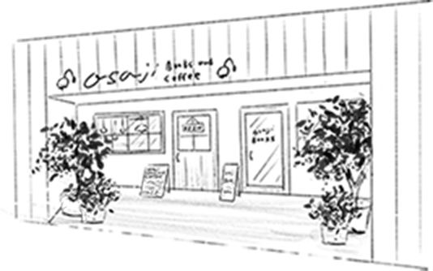

STORY
カリナについて
能力に関わらず、さまざまな背景を持つ人々が共に成長し、互いを力づけ合えるコミュニティを築きたいという想いを育んできた。彼女のライフシェアリングコミュニティでの生活と仕事の経験が、インクルーシブなコミュニティづくりの原点。
The Hillside - Karina Astheria




味わいとひらめきが出会う場所
暮らしを共にするコミュニティ
The Hillside BREAD&VILLAGE
ヒルサイドは、あらゆる能力を持つ人々を歓迎し ひとつの大きな家族のように大切にする コリビング体験の場。 さまざまな人生背景を持つ人々が集い、 それぞれの物語や文化を分かち合う。 それこそが、このコミュニティを豊かで 魅力あふれるものにしている。


持続可能な方法でハーブを育て、その恵みを食卓へ。オーガニック農法を大切にし、心と体にやさしい食を届けています。

一人ひとりが可能性を発揮できる場所。多様な個性が集まり、
支え合いながらインクルーシブなコミュニティを育んでいます。


バリの穏やかな風景の中で、仕事と休息が調和する空間。焼きたての自家製パンが、
特別なひとときを彩ります。

私たちのヒーリングガーデンは、ラベンダーやエキナセアなど、薬効で知られる癒しのハーブを育てる静かな場所。経験豊かなガーデナーが、栽培方法から保存、そしてハーブを治療用ハーブやオイル、ローションなどに抽出する方法まで、丁寧にご説明。

ヴィレッジカフェでは、コミュニティの活気あふれる雰囲気が感じられる。ここは地域の人々の集いの場として、また地元の人が朝食を楽しむ人気スポット。
ベーカリーはすべて一から手作りで、職人たちは常に新しいお気に入りを生み出すことに情熱を注いでいる。ベーグルやカヌレなど、多彩なメニューを
ご用意。
能力に関わらず、さまざまな背景を持つ人々が共に成長し、互いを力づけ合えるコミュニティを築きたいという想いを育んできた。彼女のライフシェアリングコミュニティでの生活と仕事の経験が、インクルーシブなコミュニティづくりの原点。
The Hillside - Karina Astheria

〒82191
Jl. Kebun Raya, Candikuning, Kabupaten Tabanan, Bali, Indonesia
営業時間：午前8時〜午後5時（日曜定休日）